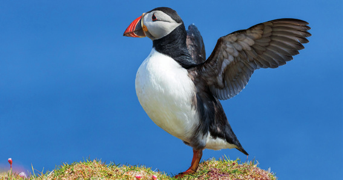
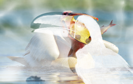
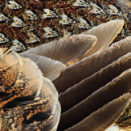
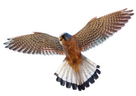

Las aves constituyen un grupo de vertebrados cuyo rasgo más destacado es su adaptación al vuelo en todo tipo de ambientes. Se encuentran aves en bosques, desiertos, montañas, praderas y océanos.
Tiene cuatro extremidades: las anteriores son alas, aunque a veces no sirven para volar; las posteriores tienen forma de patas y con ellas se posan, nadan, andan o sujetan a sus presas.

Frailecillo en un acantilado
La cabeza está separada del cuerpo por el cuello. En ella destacan los ojos y una boca con un pico córneo sin dientes.
En el tronco se encuentran las patas, cubiertas de escamas y con cuatro dedos. Las alas disponen de grandes y fuertes plumas para el empuje aéreo.
La cola sirve de timón: controla la dirección del vuelo.
Las funciones vitales de las aves
La respiración de las aves es la más eficaz de todos los vertebrados, ya que sus pulmones disponen de sacos aéreos conectados que favorecen la circulación del aire y el intercambio gaseoso. Su alimentación es muy variada: algunas son omnívoras, pero también hay granívoras, insectívoras, frugívoras, nectarívoras, piscívoras y filtradoras.
La fecundación es interna y ovíparas. Incuban sus huevos, generalmente en nidos, hasta que nacen las crías.
La vista es su sentido más desarrollado. En comparación con el ser humano, un halcón tiene unas ocho veces más agudeza visual, y la capacidad de visión nocturna es una lechuzas diez veces superior.
Picos diversos
Los picos de las aves están bien adaptados para diferentes hábitos alimentarios. Por ejemplo, cazar (tucán) o recoger (pelícano).
Imágenes de aves

Pelícano atrapando un pez

Primer plano de plumas de ave

Ave en vuelo